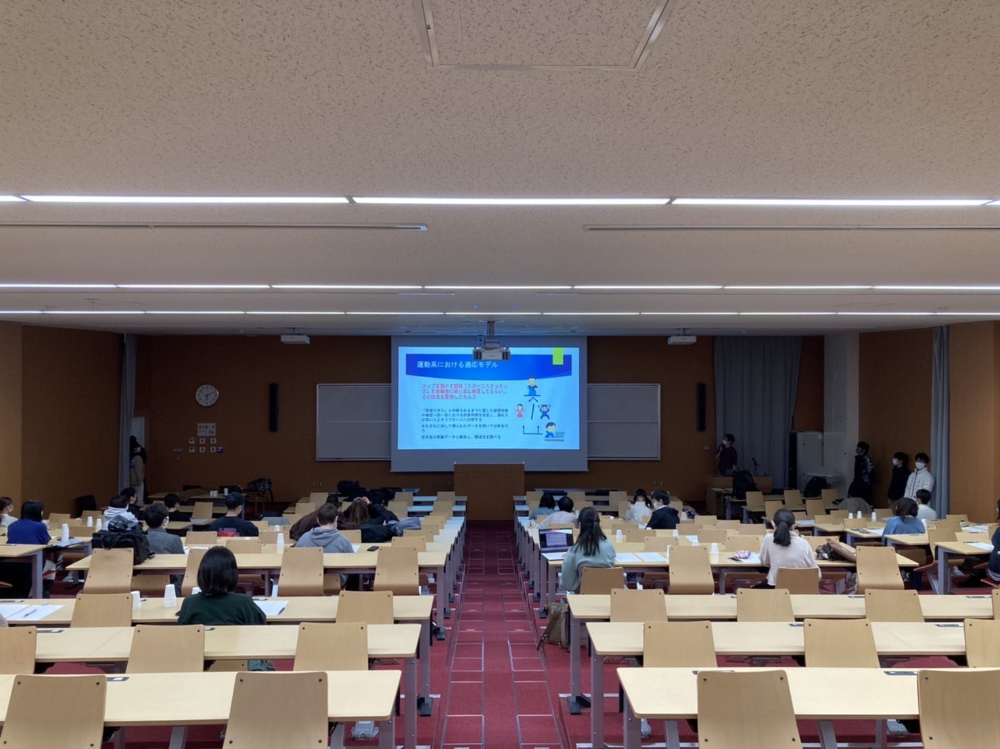
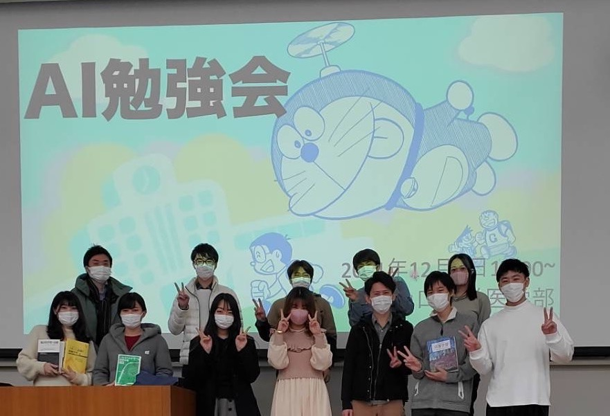

キャリアを考える会
主に２年生の女子生徒を対象に、キャリアを考える会を開催しました。
2022年3月に医療人育成センター、キャリア支援室にご協力いただき、
山口大学附属病院小児科の女性医師に仕事やプライベートについてお話を伺いました。
参加学生からは、次のような感想を頂き好評でした。
「ホームページや人づてに聞くより、将来の働く姿をより具体的にイメージできた」
「色々な働き方や人生があり、視野を狭くしないでもっと広く考えていこうと思った」
最優秀成績
令和3年度卒業の堤春菜が、令和３年度学長表彰の（学業成績優秀者の部）として推薦され、審議の結果、表彰者に決定されました。
- 受賞に際してのコメント
多くの方々の支えのおかげで、学長表彰を受賞いたしました。
一度社会に出て遠回りをしながらも、医学部に編入させてくださった山口大学や、
熱心にご指導してくださった先生方、共に勉学に励んだ仲間たちに大変感謝しています。
謙虚さと感謝の気持ちを忘れず、今後も精進してまいります。
堤春菜
{kind=link}
{kind=link}
{kind=link}
2年生テュートリアル
学年の壁を超えて、学士編入生の上級生が2年生のテュートリアル実験に被験者として参加してくれました。
{kind=link}
第2回AI勉強会
第1回に引き続き、上級生の参加者向けにAI勉強会を開催しました。
令和4年度学士編入学試験合格者への説明会
本学初の試みとして、令和4年度学士編入学試験合格者への説明会を開催しました。
- 開催の趣旨
- 当日の流れ
- 当日参加者
- オンライン事後アンケート(任意)
「合格発表があって以降，なにも音沙汰がなく不安だった」
現役の学士編入生の多くからこのような声を聞きます．おそらく，同じような不安を抱いている合格者も多いのではないでしょうか．私自身もその一人でした．私の場合は，山口大学の他に合格を頂いていた大学での説明会が不安を解消する良い機会でした．私の知る限り，合格者の声なき不安に耳を傾け，解消するために動いているのはその大学のみです．結局最後まで悩み私は山口大学へ編入したのですが，その大学の素晴らしい取り組みを山口大学でも取り入れたい，そう思い，篠田先生，清木先生はじめ学務課・図書館の方々にご協力いただき合格者説明会を実施するに至りました．告知が直前になったことで合格者の方々にご迷惑をかけてしまったことなど改善点は多々ありますが，下記アンケート結果からも初めての試みとしては及第点の出来であったのではと思っています．このような取り組みが，全国の他の大学に広がってくれればとも思います．
1. 編入学者に期待されること（篠田 医学部長）
2. ４月に向けた準備について（清木 教授）
3. ５年間の流れ，山口大学のMerit＆Demerit，学士編入するということ（在校生）
4. 自己紹介（新編入生，在校生）
5. フリータイム，学内見学
合格者：対面7名，Zoom3名
教員 ：篠田 医学部長，清木 教授
学務課：２名
図書館：１名
在校生：5年５名，4年３名，3年１名，2年３名
回収率：100%
回答一部：
「事前に抱いていた期待に対して何点か(5点満点)」
5点(8名)，4点(2名)
第1回AI勉強会
2年生を対象に、AI勉強会を開催しました。
{kind=link}